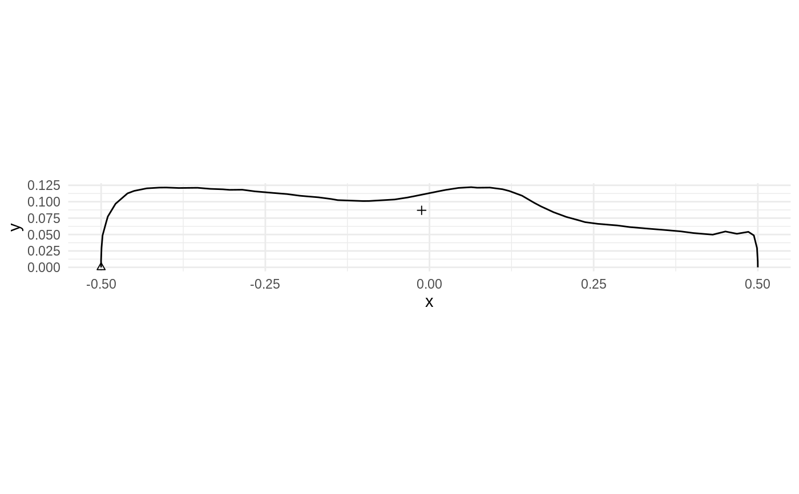
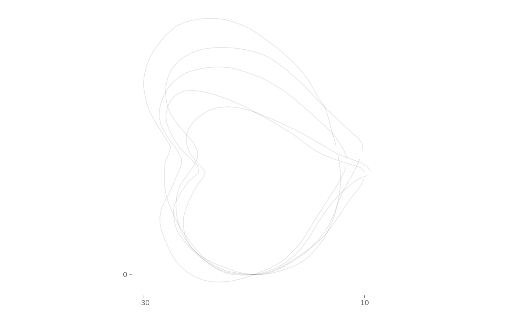

coo_baseline.RdRegister shapes on new baseline, that is defines certain points, to be on certain target points, that is homogeneizes for scale, rotation and position.
coo_baseline( x, target1, target2, id1, id2, ldk1, ldk2, from_col, ldk_col, to_col, ... ) coo_bookstein(x, id1, id2, ldk1, ldk2, from_col, ldk_col, to_col, ...)
| x | coo_single, coo_list or mom_tbl |
|---|---|
| target1, target2 |
|
| id1, id2 |
|
| ldk1, ldk2 |
|
| from_col | colnames from where to get the coo_list and how to name the resulting one (only for mom_tbl method) |
| ldk_col | column name to use for landmakrs |
| to_col | colnames from where to get the coo_list and how to name the resulting one (only for mom_tbl method) |
| ... | useless here |
a coo_single, coo_list or mom_tbl
coo_bookstein is just a coo_baseline with target1=c(-0.5, 0) and target2=c(0.5, 0).
Given coo_baseline defaults, if the two targets are not modified, the two methods are equivalent.
coo_bookstein: special case of Bookstein coordinates
todo review
Other coo_modifyers:
coo_align(),
coo_center(),
coo_reflect,
coo_rev(),
coo_rotatecenter(),
coo_rotate(),
coo_sample_rr(),
coo_sample(),
coo_scale(),
coo_shear(),
coo_slide(),
coo_split(),
coo_template(),
coo_trans(),
coo_trim(),
coo_up()
# default target1 and target2 # are Bookstein coordinates bot %>% pick(1) %>% coo_center %>% coo_align %>% coo_up() %>% coo_baseline() %>% gg()
hearts %>% dplyr::slice(1:5) %>% dplyr::rename(foo=ldk) %>% coo_baseline(ldk1=2, ldk2=4, target1=c(-10, 0), target2=c(20, 0), ldk_col=foo) %>% coo_slide(ldk=4, ldk_col=foo) %>% pile(alpha=0.1)#>#>